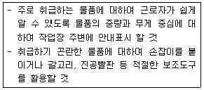
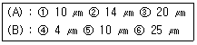
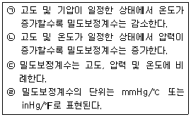
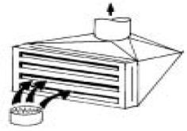
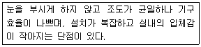

산업위생관리기사 (2005-03-06 기출문제)
1과목: 산업위생학개론
1. 우리나라 산업안전보건법상 [중대재해]기준에 해당하지않는 것은?
- 직업성 질병자가 동시에 10인 이상 발생
- 부상자가 동시에 5인 이상 발생
- 3개월 이상의 요양을 요하는 부상자가 동시에 2인 이상 발생
- 사망자가 1인 이상 발생
(정답률: 75%)

2. 탄광업의 경우 재해건수가 가장 많이 발생되는 위험조건은?
- 시설결함
- 위험한 작업방법 및 공정
- 환경위험
- 위험방지의 미비
(정답률: 9%)
3. 간기능 장애가 있는 자에게 적합하지 않은 작업은?
- 분진작업
- 화학공업
- 외상(外傷)받기 쉬운 작업
- 일반 기계공업
(정답률: 75%)
4. 원진레이온(주)에서 문제가 된 화학물질은?
- 황화수소
- 이산화황
- 황산가스
- 이황화탄소
(정답률: 알수없음)
5. 국소피로의 평가를 위하여 근전도(EMG)를 측정하였다. 피로한 근육이 정상 근육에 비하여 나타내는 근전도상의 차이로 알맞지 않는 것은 ?
- 평균주파수의 감소
- 총전압의 감소
- 저주파수(0-40Hz)의 힘의 증가
- 고주파수(40-200Hz)의 힘의 감소
(정답률: 91%)
6. 300명이 근무하는 작업장에서 연간 50건의 재해가 발생 했으며 연간 근로시간수는 700,000 시간이었다면 이 때 도수율은?
- 32.5
- 44.6
- 57.8
- 71.4
(정답률: 알수없음)
7. 우리 나라의 유해물질 노출기준에서 '발암성추정물질'을 표기하는 것은?
- A1
- A2
- A3
- A4
(정답률: 알수없음)
8. 산업피로에 관한 설명중 알맞지 않은 것은 ?
- 정신피로와 신체피로는 작업자의 작업종류에 따라 다르므로 보통 구별이 용이하다.
- 피로는 고단하다는 주관적인 느낌이라 할 수 있다.
- 국소피로와 전신피로는 신체피로 부위의 크기에 따라 상대적으로 구분된다.
- 과로는 피로의 축적으로 단기간 휴식으로 회복이 가능하며 발병단계는 아니다.
(정답률: 60%)
9. 허용한계를 적용함에 있어서 잘못 설명한 것은 ?
- 안전이나 위험의 한계를 나타내는 기준이 된다.
- 건강장해를 예방키 위한 지침이다.
- 대기오염정도의 판단에 사용하는데 적합하지 않다.
- 피부로 흡수되는 양은 고려하지 않았다.
(정답률: 30%)
10. 작업시 소모되는 대사량이 시간당 350에서 500 kcal이라면 미국산업위생전문가협의회 (ACGIH)에서 구분한 작업 강도로 가장 적절한 것은?
- 경작업
- 중등도 작업
- 심한 작업
- 극심한 작업
(정답률: 알수없음)
11. 근무교대제에 관한 설명 중 가장 적절한 것은?
- 누적 피로를 회복하기 위해서는 정교대방식보다는 역교대방식이 좋다.
- 야근 후 충분한 휴식을 위해서는 24시간 이상의 여유가 있어야 한다.
- 야간 근무시 가면(假眠)은 반드시 필요하며 보통 2∼4시간이 적합하다.
- 야간 근무의 연속일 수는 대략 1주일이면 적합하다.
(정답률: 59%)
12. 후생시설인 목욕실의 넓이를 산출하는 식으로 가장 적절한 것은 ? (단, Ｘ는 출근인원이다.)
- 3m2 + 6m2 ×(Ｘ/10)
- 6m2 + 3m2 ×(Ｘ/10)
- 9m2 + 6m2 ×(Ｘ/10)
- 6m2 + 9m2 ×(Ｘ/10)
(정답률: 59%)
13. 산소소비량을 에너지량 즉 작업대사량으로 환산한 값으로 가장 적절한 것은?(단, 산소소비량 1 L 기준)
- 5 kcal
- 10 kcal
- 15 kcal
- 20 kcal
(정답률: 50%)
14. 미국산업위생학술원은 산업위생분야에 종사하는 사람들이 지켜야 할 윤리강령을 채택하였다. 이중 포함 되지 않는 것은?
- 전문가로서의 책임
- 일반대중에 대한 책임
- 기업주와 고객에 대한 책임
- 국가에 대한 책임
(정답률: 80%)
15. 피로의 현상과 피로조사방법등을 나타낸 내용 중 알맞지 않는 것은?
- 피로현상은 개인차가 심하므로 작업에 대한 개체의 반응을 수치로 나타내기 어렵다.
- 노동수명(turn over ratio)으로서 피로를 판정하는 것은 적합치 않다.
- 피로조사는 피로도를 판가름하는데 그치지 않고 작업방법과 교대제 등을 과학적으로 검토할 필요가 있다.
- 작업시간이 등차급수적으로 늘어나면 피로회복에 요하는 시간은 등비급수적으로 증가하게 된다.
(정답률: 알수없음)
16. 현재 총흡음량이 1,200sabins인 작업장의 천장에 흡음물질을 첨가하여 2,800sabins을 더할 경우 예측되는 소음 감음량(NR)은?
- 2.6dB
- 3.5dB
- 4.3dB
- 5.2dB
(정답률: 18%)
17. 작업을 수행하는데 필요한 직종간의 연결성, 공장설계에 있어서의 기능적 특성, 경제적효율, 제한점 등을 고려하여 세부설계를 하여야 하는 인간공학의 활용단계로 알맞는 것은 ?
- 준비단계
- 선택단계
- 적용단계
- 시행단계
(정답률: 알수없음)
18. 영국에서 최초로 직업성 암을 보고하여, 1788년 '굴뚝청소부법'이 통과되도록 노력한 사람은 ?
- Ramazzini
- Paracelsus
- Percivall Pott
- Robert Owen
(정답률: 79%)
19. 산업보건기준 규칙상 사업주는 몇킬로그램 이상의 중량을 들어올리는 작업에 근로자를 종사하도록 할 때 아래와 같은 조치를 취하여야 하는가?

- 15
- 10
- 5
- 3
(정답률: 73%)
20. 국소피로와 적정 작업시간에 대한 다음의 표현중 올바르지 못한 것은?(단, 근로자가 가지고 있는 최대의 힘;maximum strength, MS이고 작업이 요구하는 힘;required force, RF)
- 적정 작업시간은 작업강도와 대수적으로 비례한다.
- 작업강도(%MS)=[RF/MS]×100
- 적정작업시간(초)=671,120×%MS-2.222
- 작업강도가 10% 미만인 경우 국소피로는 오지 않는다.
(정답률: 47%)
2과목: 작업위생측정 및 평가
21. 일반적으로 소음계는 A, B, C 세가지 특성에서 측정할 수 있도록 보정되어 있다. 그중 A특성치는 몇 phon의 등감곡선에 기준한 것인가?
- 30 phon
- 40 phon
- 50 phon
- 70 phon
(정답률: 90%)
22. 다음 중 미국 ACGIH에서 정의한 (A) 흉곽성 입자상물질(Thoracic particulate mass ,TPM)과 (B) 폐포에 침착하는 호흡성 먼지 (Respirable particulate mass, RPM)의 평균 입경을 올바르게 연결한 것은?

- ①-④
- ②-⑤
- ②-④
- ③-⑤
(정답률: 알수없음)
23. 공기시료채취시 공기유량을 보정하는 데는 1차 표준기구 및 2차 표준기구 두 종류의 표준기구가 사용된다. 다음중 2차표준기구는?
- 비누거품미터(soap bubble meter)
- 피토튜브(pitot tube)
- 폐활량계(spirometer)
- 로타미터(rotameter)
(정답률: 73%)
24. 입자의 크기가 0.5㎛이하의 입자상물질이 호흡기내에 침착하는데 작용하는 메카니즘 중 가장 그 역할이 큰 작용은?
- 충돌
- 확산
- 침강
- 간섭
(정답률: 39%)
25. 먼지의 한쪽 끝 가장자리와 다른쪽 끝 가장자리 사이의 거리로 과대평가될 가능성이 있는 입자성 물질의 직경은?
- 마틴 직경(Martic's diameter)
- 퍼레트 직경(Feret's diameter)
- 공기역학 직경(Aerodynamic diameter)
- 등면적 직경(Projected Area diameter)
(정답률: 알수없음)
26. 시료 채취에 사용하지 않은 동일한 여과지에 첨가된 양과 분석량의 비로 나타내며, 여과지를 이용하여 채취한 금속을 분석하는데 보정하기위해 행하는 실험은?
- 탈착효율 실험
- 회수율 실험
- 독성실험
- 안전성 실험
(정답률: 알수없음)
27. 분광광도계(흡광광도계)를 사용할 때 자외선 영역에 주로 사용되는 광원은?
- 텅스텐램프
- 중수소방전관
- 중공음극램프
- 광전증방전관
(정답률: 17%)
28. 노출기준(8시간 기준)이 40ppm인 트리클로로에틸렌을 취급하는 작업에서 하루 10시간씩 근무한다면 보정된 허용농도치는? (단, Brief와 Scale의 보정방법 사용)
- 36ppm
- 33ppm
- 30ppm
- 28ppm
(정답률: 62%)
29. 작업환경공기중 벤젠(TLV 10ppm)이 5ppm, 톨루엔(TLV100ppm)이 50ppm 및 크실렌(TLV 100ppm)이 60ppm으로 공존하고 있다고 하면 혼합물의 허용농도는? (단, 상가작용 기준)
- 78ppm
- 72ppm
- 68ppm
- 64ppm
(정답률: 알수없음)
30. 흡수액을 이용한 작업환경측정에 대한 설명으로 옳지 않은 것은?(단, 포집 = 채취)
- 흡수액에 오염물질이 포화농도가 될 때 까지 시료의 흡수는 지속 된다.
- 시료는 흡수액에 흡수된 후에도 증발하려는 성질이 있기 때문에 완전한 흡수는 일어나지 않는다.
- 휘발성이 큰 물질을 용매로 사용하는 경우는 계속해서 손실액을 보충해주어야 한다.
- 흡수액을 사용하는 방법은 시약운반이 편리하고, 위험도가 낮아 점차 사용이 확대되고 있다.
(정답률: 60%)
31. 작업환경측정시 유량, 측정시간, 회수율, 분석등에 의한 오차가 각각 20%, 15%, 10%, 5% 일 때 누적오차는?
- 50%
- 31.5%
- 27.4%
- 18.6%
(정답률: 알수없음)
32. 동일(유사)노출그룹을 설정하는 목적과 가장 거리가 먼 것은?
- 시료채취수를 경제적으로 하는데 있다.
- 모든 근로자의 노출농도를 평가하는데 있다.
- 법적인 노출기준 초과여부를 평가하는데 있다.
- 역학조사 수행시 동일노출그룹의 노출농도를 근거로 노출원인 및 농도를 추정하는데 있다.
(정답률: 알수없음)
33. 가스상 물질의 작업장 공기중 농도는 체적농도 또는 질량 농도로 표시한다. 분자량이 245인 물질이 표준상태(25℃,760㎜Hg)에서 체적농도로 1.0 ppm 이라면 이것의 질량 농도(㎎/m3)는 ?
- 3.1
- 4.5
- 10.0
- 14.0
(정답률: 43%)
34. 측정방법의 정밀도를 평가하는 변이계수(coefficient of variation, CV)를 알맞게 나타낸 것은?
- 표준편차/평균치
- 평균치/표준편차
- 표준오차/표준편차
- 표준편차/표준오차
(정답률: 알수없음)
35. 작업환경 공기중을 오염시키는 유기용제를 가스크로마토 그라피로서 분석하려고 한다. 다음 중 분석 원리로 가장 알맞는 것은?
- 화학물질의 흡착성 차이
- 화학물질의 흡수성 차이
- 화학물질의 산.염기성차이
- 화학물질의 결합성 차이
(정답률: 알수없음)
36. 시료 채취대상 유해물질과 시료채취 여과지를 잘못 짝지은 것은?
- 다핵방향족탄화수소(PAHs) - PTFE 여과지
- 납, 철, 크롬 등 금속 - MCE 막 여과지
- 유리규산 - PVC 여과지
- 유리섬유 - 은막 여과지
(정답률: 알수없음)
37. 출력이 0.4W의 작은 점음원으로 부터 10m 떨어진 곳의 SPL(음압 레벨)은 ? (단, SPL= PWL - 20log r - 11 적용)
- 80 dB
- 85 dB
- 90 dB
- 95 dB
(정답률: 알수없음)
38. 산업안전보건법에 의한 작업환경측정을 실시하는 경우에는 작업환경측정을 실시 후 산업안전보건법 서식에 의하여 작업환경측정결과표를 작성하여야 한다. 작업환경측정결과표에 포함되어야 할 사항과 가장 거리가 먼 것은?
- 작업환경측정일시
- 작업환경측정자
- 예비조사결과
- 작업환경측정목적
(정답률: 31%)
39. 원자흡광 분석법을 설명한 것이다. 잘못된 것은?
- 시료를 중성원자로 증기화하여 생긴 기저상태의 원자가 그 원자증기층을 투과하는 특유 파장의 빛을 흡수하는 성질을 이용한다 .
- 원자흡광장치는 광원부, 파장선택부, 시료부, 측량부로 구성되어 있다.
- 가장 널리 쓰이는 광원은 중공음극 방전 램프이다.
- 분광기는 일반적으로 회절격자나 프리즘을 이용한 분광기가 사용된다.
(정답률: 알수없음)
40. 고체 흡착관으로 활성탄을 연결한 저유량 펌프를 이용하여 벤젠증기를 용량 0.024m3으로 포집하였다. 실험실에서 앞 부분과 뒷부분을 분석한 결과 총 550㎍이 검출되었다. 벤젠증기의 농도는? (단, 온도 25℃, 압력 760mmHg, 벤젠분자량 78)
- 5.6 ppm
- 7.2 ppm
- 9.4 ppm
- 11.4 ppm
(정답률: 43%)
3과목: 작업환경관리대책
41. 풍량이 200m3/min, 풍전압 100mmH2O, 송풍기 소요동력 5kw라면 송풍기 효율(η)은?
- 45%
- 50%
- 60%
- 65%
(정답률: 55%)
42. 귀덮개의 착용시 일반적으로 요구되는 차음효과를 가장 알맞게 나타낸 것은?
- 저음역 20dB 이상 , 고음역 45dB 이상
- 저음역 20dB 이상 , 고음역 55dB 이상
- 저음역 30dB 이상 , 고음역 40dB 이상
- 저음역 30dB 이상 , 고음역 50dB 이상
(정답률: 50%)
43. 다음은 밀도보정계수(d)에 관한 설명 중 옳은 것으로 짝지어진 것은?

- ㉠㉡
- ㉡㉢
- ㉠㉢
- ㉠㉣
(정답률: 25%)
44. 90℃곡관의 반경비가 2.0일 때 압력손실계수는 0.27이다. 속도압이 14 mmH2O라면 곡관의 압력손실(mmH2O)은?
- 7.6
- 5.5
- 3.8
- 2.7
(정답률: 36%)
45. 작업장에 퍼져 있는 트리클로로에틸렌(T.C.E)의 농도가 10,000ppm이고, 트리클로로에틸렌의 비중이 5.3이라면, 오염공기의 유효비중은 ?
- 1.043
- 1.143
- 1.129
- 1.139
(정답률: 47%)
46. 정상류가 흐르고 있는 유체 유동에 관한 연속방정식을 설명하는데 적용된 법칙은?
- 관성의 법칙
- 운동량의 법칙
- 질량보존의 법칙
- 에너지보존의 법칙
(정답률: 42%)
47. 특수송풍기중 회전차는 후경깃을 가진 익형팬과 유사하나 케이싱은 와권형이 아니고 정익붙이 축류팬과 유사하게 설계된 송풍기로 풍압이 낮고 풍량도 작으며 또한 효율이 낮아 주로 공기순환용 및 환기통풍용으로 사용되는 것은?
- 사류팬
- 횡류팬
- 이젝터
- 송풍관 붙이 원심팬
(정답률: 34%)
48. 송풍관(duct) 내부에서 유속이 가장 빠른 곳은 ? (단,ｄ는 직경임)
- 위에서 1/10 지점
- 위에서 (1/5)d 지점
- 위에서 (1/3)d 지점
- 위에서 (1/2)d 지점
(정답률: 알수없음)
49. 다음중 방진마스크의 흡기저항의 범위로 가장 알맞는 것은 ?
- 6-8mmH2O
- 16-18mmH2O
- 26-28mmH2O
- 36-48mmH2O
(정답률: 37%)
50. 흡입관의 정압과 속도압이 각각 -30.5 mmH2O, 7.2 mmH2O이 고, 배출관의 정압과 속도압이 각각 23.0 mmH2O, 15 mmH2O이면, 송풍기의 유효정압은?
- 46.3 mmH2O
- 53.2 mmH2O
- 62.1 mmH2O
- 68.4 mmH2O
(정답률: 알수없음)
51. 회전차 외경이 600mm인 원심 송풍기의 풍량은 300m3/min이다. 회전차 외경이 1200mm인 동류(상사구조)의 송풍기가 동일한 회전수로 운전된다면 이 송풍기의 풍량은? (단, 두 경우 모두 표준공기를 취급한다.)
- 300m3/min
- 600m3/min
- 1,200m3/min
- 2,400m3/min
(정답률: 알수없음)
52. 내경이 760mm의 얇은 강철판의 직관을 통하여 풍량 115m3/min의 표준공기를 송풍할 때의 Reynold수는 ? (단, 동점성계수: 1.5×10-5(m2/sec) )
- 2.14×105
- 4.20×105
- 6.67×105
- 8.61×105
(정답률: 40%)
53. 다음 그림의 국소배기장치의 후드는 무슨 형인가 ?

- 수형(하방형)
- 외부식(슬로트형)
- 포위식
- 레시바식
(정답률: 55%)
54. 한변이 1m인 정사각형 하방형 후드를 설치하고자 한다. 오염원에서 후드까지의 거리 0.5m, 제어속도 0.3m/sec일 때 필요한 환기량(m3/sec)은? (단, Q=V(10x2+A) )
- 약 1
- 약 2
- 약 3
- 약 4
(정답률: 29%)
55. 화재 및 폭발방지 목적으로 전체 환기시설을 해야 할 때 필요 환기량 계산에 필요 없는 것은?
- 유해물질 발생량
- TLV
- 환기조건 및 운전상태의 온도
- 유해물질의 분자량
(정답률: 알수없음)
56. 개인보호구에서 귀덮개의 장점 중 틀린 것은?
- 귀마개보다 일관성 있는 차음효과를 얻을 수 있다.
- 동일한 크기의 귀덮개를 대부분의 근로자가 사용할 수 있다.
- 귀에 염증이 있어도 사용할 수 있다.
- 고온에서 사용해도 불편이 없다.
(정답률: 알수없음)
57. 고열 발생원에 후드를 설치할 때 주변환경의 난류형성에 따른 누출 안전계수는 소요송풍량 결정에 크게 작용한다. 열상승 기류량 30m3/min, 누입한계유량비 3.0, 누출안전계수 7이라면 소요송풍량은?
- 70m3/min
- 320m3/min
- 450m3/min
- 660m3/min
(정답률: 12%)
58. 작업장내 공기압력을 음압(-)으로 유지해야 할 곳으로 가장 적절한 것은?
- 오염이 전혀없는 깨끗한 작업장
- 오염이 심한 작업장
- 오염의 정도가 정확히 확인 되지 않는 작업장
- 청정공기를 필요로 하는 식품공업이나 전자공업 작업장
(정답률: 알수없음)
59. 여포제진장치의 여포의 모양에 따른 형식의 분류중 이에 해당되지 않는 것은 ?
- Tube Type
- Flat Screen Type
- Cyclone Type
- Envelope Type
(정답률: 알수없음)
60. 어떤 단순후드의 유입계수가 0.82이고, 기류속도가 18m/s일 때, 후드의 정압은? (단, 공기밀도는 1.2kg/m3 )
- -32.8mmH2O
- -29.5mmH2O
- -14.8mmH2O
- -9.7mmH2O
(정답률: 50%)
4과목: 물리적유해인자관리
61. 다음 설명에 가장 알맞은 조명의 종류는?

- 직접조명
- 간접조명
- 전반조명
- 전반조명과 국소조명을 병용한 조명
(정답률: 알수없음)
62. 다음의 전리방사선 종류 중 입자의 형태를 갖추지 않은 것은?
- 알파(α)선
- 베타(β)선
- 감마(γ)선
- 중성자
(정답률: 25%)
63. 자외선의 인체내 작용에 대한 설명으로 가장 거리가 먼 것은?
- 홍반 : 300nm 부근의 폭로가 가장 강한 영향을 줌
- 전신작용 : 자극작용이 있으며 대사가 항진되고 적혈구 백혈구, 혈소판이 증가
- 비타민 D 합성 : 350-400nm 생성이 가장 활발
- 살균작용 : 254-280nm에서 핵단백 파괴
(정답률: 39%)
64. 어떤 작업장에서 0.01 watt의 소리에너지를 발생시키는 음원이 있을 경우, 이 음원의 파워레벨은?
- 95dB
- 100dB
- 1⑤dB
- 110dB
(정답률: 62%)
65. [태양자외선과 산업장에서 발생하는 자외선은 공기중의 NO2와 올레핀계 탄화수소와 광화학적 반응을 일으켜 트리클로로 에틸렌을 독성이 강한 ( )으로 전환시키는 광화학적 작용한다] ( )안에 맞는 것은?
- 포름알데히드
- 포스겐
- 아황산가스
- 염화수소
(정답률: 알수없음)
66. 자연조명을 이용할시 고려해야 할 사항 중 적합하지 않은 것은 ?
- 북쪽광선은 일중 조도의 변동이 작고 균등하여 눈의 피로가 적게 발생할 수 있다.
- 창의 자연채광량은 광원면인 창으로부터의 거리와 창의 대소 및 위치에 따라 달라진다.
- 보통 조도는 창의 높이를 증가시키는 것보다 창의 크기를 증가시키는 것이 효과적이다.
- 바닥면적에 대한 유리창의 면적은 보통 1/5 - 1/6 이 적합하나 개각에 따라 달라질 수 있다.
(정답률: 40%)
67. 전리방사선의 흡수선량이 생체에 영향을 주는 정도로 표시하는 선당량(생체실효선량)의 단위를 나타내는 약자는?
- R
- Ci
- rem
- rad
(정답률: 30%)
68. 이상기압에 대한 대책에 있어서 감압병의 예방 및 치료에 관한 설명으로 틀린 것은?
- 감압병의 증상이 발생하였을 때에는 환자를 바로 원래의 고압환경 상태로 복귀시킨다.
- 고압환경에서 작업하는 근로자에게 질소를 헬륨으로 대치한 공기를 호흡시킨다.
- Haldane의 실험근거상 정상기압보다 1.25기압을 넘지 않는 고압환경에는 아무리 오랫동안 폭로되거나 아무리 빨리 감압하더라도 기포를 형성하지 않는다.
- 감압을 끝날 무렵에 순수한 산소를 흡입시키면 감압시간을 50%이상 단축시킬 수 있다.
(정답률: 30%)
69. 산소 결핍증에 관한 설명으로 알맞지 않은 것은?
- 저산소증이라고도 하며, 산소결핍에 의한 질식사고가 가스재해 중에서 큰 비중을 차지한다.
- 무경고성이고 급성적 치명적이기 때문에 많은 희생자를 발생시킬 수 있다.
- 작업환경내 산소농도는 18%를 하한선으로 잡을 수가 있으나 21% 근방이어야 안심할 수 있다.
- 증상특징은 중추성 기능장애가 초기에 나타나고 산소농도 저하상태가 진행됨에 따라 대뇌피질의 기능저하가 일어나 사망한다.
(정답률: 20%)
70. 사람에게 국소진동의 영향을 줄 수 있는 진동의 주파수 범위기준으로 가장 적절한 것은?
- 8 - 1500 Hz
- 20 - 20000 Hz
- 2 - 100 Hz
- 1 - 80 Hz
(정답률: 65%)
71. 마이크로파의 생체작용에 대한 설명으로 적절치 않은 것은?
- 일반적으로 100MHz이하의 마이크로파/RF가 피부에 흡수되어 온감을 일으킨다.
- 중추신경계의 증상으로 성적 흥분 감퇴, 정서 불안정 등이 기록되어 있다.
- 마이크로파로 인한 눈의 변화를 예측하기 위해 수정체의 Ascorbic산 함량을 측정할 수 있다.
- 혈액내의 백혈구 수의 증가, 망상 적혈구의 출현, 혈소판의 감소가 나타난다.
(정답률: 39%)
72. 진동의 크기를 나타내는데 사용되지 않는 것은?
- 변위(displacement)
- 충격(impulse)
- 속도(velocity)
- 가속도(acceleration)
(정답률: 알수없음)
73. '저압환경'에 관한 설명 중 옳지 않는 항목은?
- 급성고산병의 가장 특징적인 것은 흥분성이다
- 항공치통,항공이염,항공부비강염이 일어날 수 있다
- 폐수종은 어린이보다 적응성이 떨어지는 어른에게 주로 발생된다.
- 일정고도 이상의 고공에서 비행업무에 종사하는 사람에게서 가장 큰 문제가 되는 것은 산소부족이다.
(정답률: 54%)
74. 땀이 나지 않더라도 피부표면과 호흡기를 통하여 수분이 증발하는데 이를 불감발한이라한다. 땀과 구별되는 불감 발한의 발생정도는?
- 약 2.4L/day
- 약 1.2L/day
- 약 0.6L/day
- 약 0.3L/day
(정답률: 17%)
75. '고온순화'에 대한 설명으로 틀린 것은?
- 고온순화가 되면 땀속에 염분농도는 감소한다.
- 고온순화는 매일 고온에 반복적이며 지속적으로 폭로시 4-6일에 주로 이루어진다.
- 고온순화에 관계된 가장 중요한 외부영향요인은 영양과 수분보충이다.
- 고온순화되지 않은 작업자는 대부분 시간당 2L이상의 땀을 흘리지만 순화된 작업자는 시간당 0.7L를 넘지않게 된다.
(정답률: 알수없음)
76. 수지가 창백해지고 손이 차며 절이거나 통증이 오며 한냉시 특히 이 증상이 악화가 될 우려가 있는 직업은?
- 착암기에 의한 굴진작업
- 냉동실내의 운반작업
- 잠수작업
- 용접작업
(정답률: 40%)
77. 작업장에서 고열에 대한 대책으로 틀린 것은 ?
- 절연방법을 이용하여 로에서 발생되는 열을 차단한다
- 고열작업장에서는 상승기류가 생기므로 적절히 환기를 한다.
- 냉방장치를 설치한다.
- 피복의 외피는 통기성이 작고 함기성이 큰 것을 택한다.
(정답률: 90%)
78. 1촉광의 광원으로 부터 한 단위입체각으로 나가는 광속의 단위는?
- Lumen
- Candle
- Lux
- Lambert
(정답률: 47%)
79. 열경련(Heat Cramps)에 대한 설명 중 가장 알맞은 것은?
- 장시간의 고온환경 폭로후에 오며 낮은 혈중염분농도와 팔과 다리의 근육경련이 일어난다.
- 체온이 정상보다 매우 높아지며 의식혼란,혼수가 일어난다.
- 혈중 Cl농도가 현저히 감소하며 체온의 급속한 냉각이 우선되어야 한다.
- 고온환경에 급격히 확장된 혈관에 따른 근육의 강직 동통, 일시적 피부 냉,건조현상을 수반한다.
(정답률: 65%)
80. 용광로나 가열로에서 주로 발생되며 열의 노출과 관련되어있어 열선이라고도 하는 비전리방사선은?
- 마이크로선
- 자외선
- 가시광선
- 적외선
(정답률: 50%)
5과목: 산업독성학
81. 다음 중 상기도 점막 자극 가스와 가장 거리가 먼 것은?
- 포스겐
- 암모니아
- 크롬산
- 염화수소
(정답률: 알수없음)
82. 먼지가 호흡기계로 들어올 때 인체가 가지고 있는 방어 기전이 조합된 것으로 가장 알맞는 것은?
- 점액 섬모운동과 폐포의 대식세포의 작용
- 면역작용과 폐내의 대사 작용
- 점액 섬모운동과 가스교환에 의한 정화
- 폐포의 활발한 가스교환과 대사 작용
(정답률: 알수없음)
83. 생물학적 모니터링측정에 대한 설명과 가장 거리가 먼 것은?
- 작업자의 생물학적 시료에서 화학물질의 노출을 추정 하는 것을 말한다.
- 근로자 노출 평가와 건강상의 영향 평가 두 가지 목적으로 모두 사용될 수 있다.
- 모든 노출경로에 의한 흡수정도를 나타낼 수 있다.
- 모든 측정치가 개인시료결과보다 명확하여 측정결과를 해석하기가 용이하다.
(정답률: 67%)
84. 다음 중 '카드뮴'의 인체 내 축적기관으로 가장 적절히 짝지은 것은?
- 뼈, 근육
- 간, 신장
- 혈액, 모발
- 뇌, 근육
(정답률: 64%)
85. 점막이 충혈되어 화농성비염이 되고 차례로 깊이 들어가서 궤양이 되고 비중격천공이 나타나는 물질은 ?
- 수은
- 크롬
- 아연
- 납
(정답률: 64%)
86. 이제까지 알려진 가장 가벼운 금속중의 하나이며 만성중독은 'Neighborhood cases'라고 불리우기도 하는 중금속은?
- 니켈
- 아연
- 베릴륨
- 바륨
(정답률: 알수없음)
87. 무기성 납으로 인한 중독시 원활한 체내 배출을 위해 사용하는 배설촉진제는 ?
- Ca - EDTA
- δ-ALAD
- β-BAL
- 코프로폴린산
(정답률: 알수없음)
88. 방향족 탄화수소에 속하는 에틸벤젠의 생물학적 노출지표로 이용되는 대사산물은?
- 페놀
- 마뇨산
- 메틸 마뇨산
- 만델린산
(정답률: 37%)
89. 직업성 피부질환중 가장 많은 부분을 차지하고 있는 것은?
- 세균감염에 의한 피부염
- 자극에 의한 원발성 피부염
- 알레르기에 의한 접촉피부염
- 화학물질에 인한 비접촉피부염
(정답률: 알수없음)
90. 인체의 주요 기관별로 유해물질에 의한 중독영향을 고려할 때, 각 기관과 장해를 주는 유해물질을 가장 알맞게 짝지은 것은?
- 신장 : 4 - aminodiphenyl
- 조혈기관 : 카드뮴과 수은
- 방광 : 벤젠과 TNT
- 간 : 사염화탄소(CCl4)
(정답률: 69%)
91. 유기성 분진에 의한 진폐증은 어느 것인가 ?
- 탄소폐증
- 규폐증
- 활석폐증
- 농부폐증
(정답률: 55%)
92. 다음 중 가스상태에 있을 때 비중이 가장 큰 물질은?
- 암모니아
- 포스겐
- 일산화탄소
- 염화수소가스
(정답률: 54%)
93. 산업장에서 사용되는 벤젠은 중독증상을 유발시킨다. 벤젠중독의 특이증상으로 가장 적절한 것은 ?
- 피부염과 피부암발생
- 간과 신장의 장해
- 조혈기관의 장해
- 호흡기계 질환 및 폐암발생
(정답률: 알수없음)
94. 체내에서 유해물질을 분해하는데 가장 중요한 역할을 하는 것은 ?
- 백혈구
- 혈압
- 효소
- 적혈구
(정답률: 65%)
95. 다음 중 입자의 호흡기계 침적(축적)기전이 아닌 것은?
- 충돌
- 침강
- 변성
- 확산
(정답률: 84%)
96. 수은중독의 증상과 가장 거리가 먼 것은 ?
- 잇몸에 특징적인 띠가 나타난다.
- 구내염이 생기고 침을 많이 흘린다.
- 혀나 손가락의 근육이 떨린다.
- 심한 뇌증상이 올 수도 있다.
(정답률: 알수없음)
97. 단순 에스테르 중에서 독성이 가장 높은 물질은 ?
- 메타올
- 개미산염
- 이소프로파놀
- 부틸산염
(정답률: 20%)
98. 카드뮴 중독에 있어 체내 대사에 관한 기술중에서 옳지 않는 것은?
- 경구 흡수율은 3 ∼ 5%로 호흡기 흡수율보다 작으나 단백질이 다량포함된 식사를 할 경우 흡수율이 증가된다.
- 칼슘 결핍시 장내에서 칼슘 결합 단백질의 생성이 촉진되어 카드뮴의 흡수가 증가한다
- 카드뮴이 체내에서 이동 및 분해하는데는 분자량 10,500정도의 저분자 단백질인 Metallothionein이 관여한다.
- 체내에 축적된 카드뮴의 50 - 75%는 간과 신장에 축적된다.
(정답률: 29%)
99. 중금속 취급에 의한 직업성 질환을 나타낸 것으로 서로 관련이 가장 작은 것은 ?
- 납중독 - 골수침입,빈혈,소화기장해
- 수은중독 - 구내염,수전증,정신장해
- 망간중독 - 신경염,신장염,중추신경장해
- 니켈중독 - 백혈병,재생불량성 빈혈
(정답률: 73%)
100. 장기간 폭로될때 간조직세포에서 여러 소기관이 증식하고 섬유화증상이 나타나 간에 혈관육종(hemangiosarcoma)을 일으키는 물질은?
- 삼염화에틸렌
- 사염화에틸렌
- 염화비닐
- 메틸클로로포름
(정답률: 알수없음)